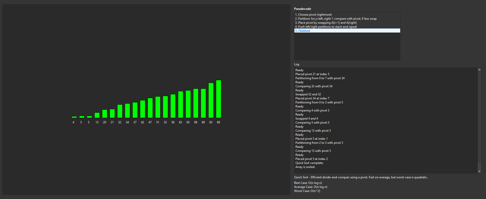

Sorting Algorithms Visualizer
A Qt application that animates 10 sorting algorithms with timeline scrubbing, pseudocode highlighting, and event logging for algorithm education and performance comparison.

n=10
10 Sorting Algorithms
Visualizes Bubble, Insertion, Selection, Quick, Merge, Heap, Shell, Tim, Radix, and Gnome sort with unique state tracking.
code
Pseudocode Sync
Highlights each algorithm step with synchronized pseudocode and operation annotations for easier learning.
τ
Timeline Scrubbing
Review every state in the sort history with a draggable timeline slider and manual step controls.
σ
Distribution Control
Switch between random, sorted, reversed, and nearly sorted arrays with perturbation controls to explore algorithm behavior.
Qt 6 Visualization Layer
Uses Qt 6 Widgets and QGraphicsView to render bars, color-coded comparisons, and live animation state in a responsive interface.
C++ State Management
The backend records sorting events, array states, and metadata so the UI can rewind, scrub, and replay algorithms without recomputing from scratch.
Algorithm Engine
Implements each sort with its own state machine, handling iterative recursion, heap operations, radix passes, and hybrid merge/timsort behavior.
Sorting algorithms can differ greatly in speed depending on the input order.
// Bubble sort is simple but slow on large arrays.
// Quick sort is fast on average but can degrade if the pivot is poor.
// Merge sort guarantees O(n log n) time and is stable depending on implementation.
// Choosing the right algorithm depends on data size, order, and memory constraints.
Ready to turn complex ideas into polished applications?
I build Qt C++ desktop software with strong mathematical foundations and immersive visual interfaces. Reach out to discuss research tools, demonstration apps, or portfolio work.
Contact via email